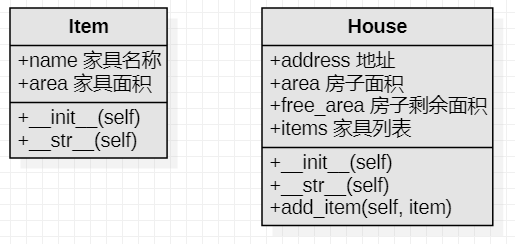

<!DOCTYPE lake>
<h2 data-lake-id="KUrGd" data-lake-index-type="2" id="KUrGd"><span data-lake-id="ueb839804" id="ueb839804">搬家具规则</span></h2><p data-lake-id="u25713177" id="u25713177"><strong><span data-lake-id="ucf65fbe3" id="ucf65fbe3">家具</span></strong></p><ul list="u22bfc8c0"><li data-lake-id="u5ca8e32e" fid="ue5bbe7af" id="u5ca8e32e"><span data-lake-id="ucfc4a678" id="ucfc4a678">家具分不同的类型，并占用不同的面积</span></li><li data-lake-id="ubac0188d" fid="ue5bbe7af" id="ubac0188d"><span data-lake-id="u2995583b" id="u2995583b">输出家具信息时，显示家具的类型和家具占用的面积</span></li></ul><p data-lake-id="ubd1b6aa7" id="ubd1b6aa7"><strong><span data-lake-id="u2031b2f8" id="u2031b2f8">房子</span></strong></p><ul list="u2531e6d6"><li data-lake-id="u01a8e5ef" fid="u4806075c" id="u01a8e5ef"><span data-lake-id="u8ca2c3f1" id="u8ca2c3f1">房子有自己的地址和占用的面积</span></li><li data-lake-id="u21504c94" fid="u4806075c" id="u21504c94"><span data-lake-id="u6b95f6d7" id="u6b95f6d7">房子可以添加家具</span></li></ul><ul data-lake-indent="1" list="u2531e6d6"><li data-lake-id="u1dc8aaee" fid="u4806075c" id="u1dc8aaee"><span data-lake-id="u6b39eaed" id="u6b39eaed">如果房子的剩余面积可以容纳家具，提示家具添加成功；</span></li><li data-lake-id="u257b5ed4" fid="u4806075c" id="u257b5ed4"><span data-lake-id="u24c5f424" id="u24c5f424">否则提示添加失败</span></li></ul><ul list="u2531e6d6" start="3"><li data-lake-id="u493a116b" fid="u4806075c" id="u493a116b"><span data-lake-id="ufe2d5196" id="ufe2d5196">输出房子信息时，可以显示房子的地址、占地面积、剩余面积</span></li><li data-lake-id="uf17e40da" fid="u4806075c" id="uf17e40da"><span data-lake-id="u9aba6a36" id="u9aba6a36">查看房子中所有的家具</span></li></ul><h2 data-lake-id="cEeFD" data-lake-index-type="2" id="cEeFD"><span data-lake-id="u499ed3ca" id="u499ed3ca">类的设计</span></h2><p data-lake-id="u40b793ef" id="u40b793ef"><span data-lake-id="ud8ff3f3d" id="ud8ff3f3d">可以提取两个类：家具类</span><code data-lake-id="u0b8e7346" id="u0b8e7346"><span data-lake-id="u385728a4" id="u385728a4">Item</span></code><span data-lake-id="u6ad65f18" id="u6ad65f18">和房子类</span><code data-lake-id="u2476fb1b" id="u2476fb1b"><span data-lake-id="u313ce93a" id="u313ce93a">House</span></code></p><p data-lake-id="ud2784c9a" id="ud2784c9a"><span data-lake-id="u53d9dc8b" id="u53d9dc8b">每个类具备的属性和方法如下:</span></p><p data-lake-id="u91374c0a" id="u91374c0a"></p><h2 data-lake-id="W2xCW" data-lake-index-type="2" id="W2xCW"><span data-lake-id="u2964c8d5" id="u2964c8d5">家具类</span></h2><span class="yuque-card-unsupported">[codeblock]</span><h2 data-lake-id="bnKK4" data-lake-index-type="2" id="bnKK4"><span data-lake-id="uf2f306b9" id="uf2f306b9">房子类</span></h2><span class="yuque-card-unsupported">[codeblock]</span><h2 data-lake-id="qtL5a" data-lake-index-type="2" id="qtL5a"><span data-lake-id="u1bf3583e" id="u1bf3583e">主程序逻辑</span></h2><span class="yuque-card-unsupported">[codeblock]</span><h2 data-lake-id="PhLqB" data-lake-index-type="2" id="PhLqB"><span data-lake-id="ubdbbb943" id="ubdbbb943">代码实现</span></h2><span class="yuque-card-unsupported">[codeblock]</span><p data-lake-id="u36a3e9d7" id="u36a3e9d7"><span data-lake-id="u006e4391" id="u006e4391">扩展：</span></p><blockquote class="lake-alert lake-alert-success" data-lake-id="u440b3f64" id="u440b3f64"><ul list="u7bbccc48"><li data-lake-id="u8b5d1dac" fid="u38d14359" id="u8b5d1dac"><code data-lake-id="u56a30b5b" id="u56a30b5b"><span data-lake-id="u7dae405c" id="u7dae405c">__str__</span></code><span data-lake-id="u9db09873" id="u9db09873">方法返回一个友好的、可读性较高的字符串，主要用于用户可见的输出，强调可读性和易理解性。常用于</span><span data-lake-id="u4ccd4293" id="u4ccd4293" style="color: #DF2A3F">直接</span><code data-lake-id="uf135d3e0" id="uf135d3e0"><span data-lake-id="ue04bd03a" id="ue04bd03a" style="color: #DF2A3F">print</span></code><span data-lake-id="u90ca53ce" id="u90ca53ce" style="color: #DF2A3F">对象</span><span data-lake-id="uad5b0689" id="uad5b0689">。</span></li><li data-lake-id="u63d0bdec" fid="u38d14359" id="u63d0bdec"><code data-lake-id="u0dbef973" id="u0dbef973"><span data-lake-id="u7e6d4a08" id="u7e6d4a08">__repr__</span></code><span data-lake-id="uf9839ced" id="uf9839ced">方法返回一个准确和详细的字符串，主要用于开发和调试过程中，强调准确性和完整性。</span><span data-lake-id="u31145040" id="u31145040" style="color: #DF2A3F">常用于打印</span><code data-lake-id="u9f815fb6" id="u9f815fb6"><span data-lake-id="u3d246b62" id="u3d246b62" style="color: #DF2A3F">list</span></code><span data-lake-id="u89b0ab36" id="u89b0ab36" style="color: #DF2A3F">、</span><code data-lake-id="u86219fd5" id="u86219fd5"><span data-lake-id="u9ff3d7b8" id="u9ff3d7b8" style="color: #DF2A3F">set</span></code><span data-lake-id="u93c3ff6c" id="u93c3ff6c" style="color: #DF2A3F">、</span><code data-lake-id="ub6a44a6b" id="ub6a44a6b"><span data-lake-id="u92419d55" id="u92419d55" style="color: #DF2A3F">dict</span></code><span data-lake-id="u325d07f8" id="u325d07f8" style="color: #DF2A3F">等内部的所有对象</span></li></ul></blockquote>